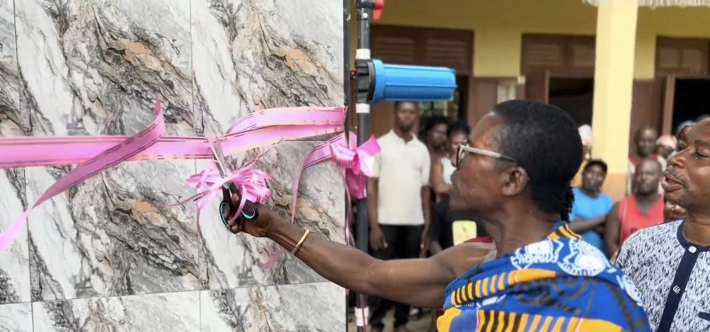
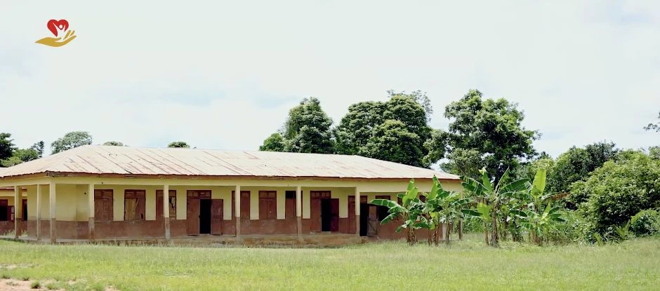
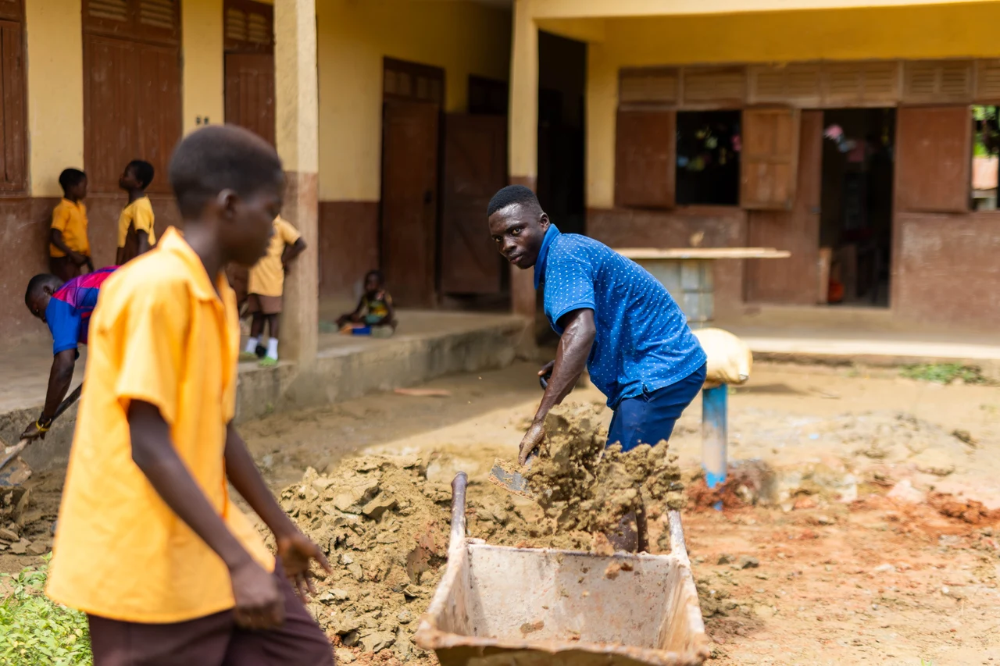

2026 · Completed & handed over
Clean water for 120+ school children and the Asonsuaso community

The completed water project supports 120+ school children and the Asonsuaso community. A visit can reveal a need. Returning to meet that need is where the work begins. In 2026, Good God Charity Foundation followed a school water project in Asonsuaso through its initial assessment, construction, progress, and final handover. The project is now complete and has been handed over.
01 · Before the work began
Before there was a handover ceremony, there was a conversation about water. In the initial film, a representative of the school explains that she had been asked to keep pupils away from a community borehole. Her account brings the need into focus: access to water was a concern in the children’s school day.
For pupils, the school day should be a time to learn, take part, and grow. Water supports the ordinary routines around that learning—drinking, washing, and caring for the shared school environment. Hearing the school’s concern gave GGCF a practical direction for its response: a water installation on the school grounds.
The foundation’s next step was to return and carry that response through. The project grew from a visit and a conversation into work at the school itself. That connection between listening and acting is where this story begins.

02 · Turning a decision into work
The next chapter moves from the visit to the work itself. Construction photographs show people mixing material, moving it by wheelbarrow, and working around the new structure beside the school building. These are the practical steps behind a finished project—the work that has to happen before a ribbon can be cut.
The camera stays close to that process. The school remains in the background while the installation takes shape in the foreground. The project’s purpose and its setting stay connected: this is work being carried out where the school community will use it.

03 · Staying with the process
A separate progress film carries the story beyond the start of the job. Together with the construction photographs, it records the middle of the journey: the period between deciding to help and being ready to hand over the result.
That middle chapter matters. A completed installation is the result of work carried through, rather than a single day of activity. Keeping a record of the stages allows supporters to follow the project as it develops and connects the final ceremony to the effort that came before it.
04 · A completed project, handed over
In the final film, the foundation returns to the school for the handover. People gather beside the completed water installation. A pink ribbon is cut at the tiled structure, with the installation’s blue filter housing visible nearby. The occasion brings the story back to the school community, where it began.
The project has been completed and handed over. That is the milestone at the heart of this story: a need recognised during a visit has become an installation delivered at the school. The four films preserve that journey—from the first look at the setting to the work, the progress, and the final ceremony.
For GGCF, giving is expressed through practical action and follow-through. This project adds a lasting piece of infrastructure to that work. Its handover closes the construction chapter and begins the next one: the facility’s place in the daily life of the school.